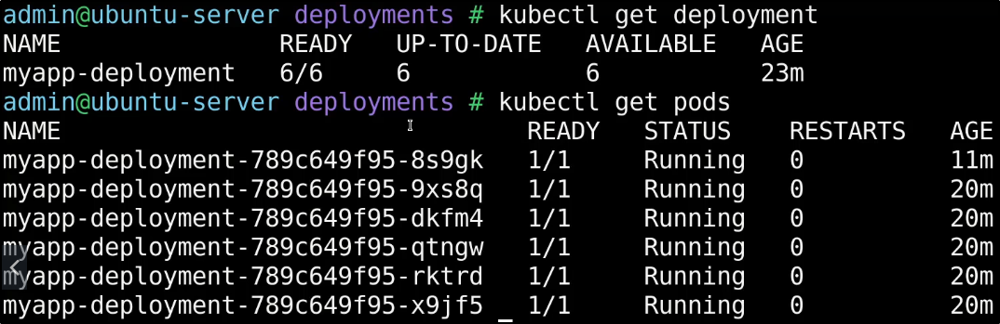

Demo - Services
Guardando ciò che abbiamo fatto in precedenza, dovremmo avere dei POD già attivi:

Ora, per far si che possiamo far accedere un utente a questa applicazione,
dobbiamo creare un Service.
NB: Selezioniamo il selector con lo stesso nome dell'app!

Ora se controlliamo i servizi, abbiamo il nostro NodePort!

NB: Il Cluster IP è usato UNICAMENTE per trovare il servizio tramite IP nel cluster,
per raggiungere il servizio da fuori SERVE L'IP DELLA MACCHINA NODE!
Nel caso usiamo Minikube, è possibile usare il comando "minikube service [servicename] url"
per ottenere l'URL del Node!